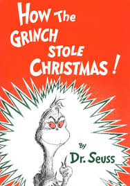

RudolphRudolph the Red-Nosed Reindeer is a fictional reindeer, created by Robert Lewis May. Rudolph first appeared in a 1939 booklet written by Robert L. May!
The GrinchThe Grinch is a fictional character created by Dr. Seuss. He first appeared as the main character of the 1957 Christmas story How the Grinch Stole Christmas!SantaSanta Claus grew out of traditions surrounding the historical Saint Nicholas, a fourth-century Greek bishop and gift-giver of Myra. He was also known as the British figure of Father Christmas.  |
| You can purchase this book
| $10.99 + tax You can purchase this book
| $10.99 + tax You can purchase this poster
| $8.99 + tax |